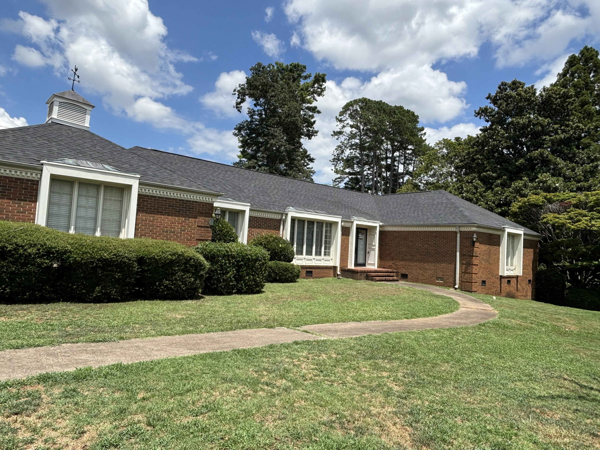
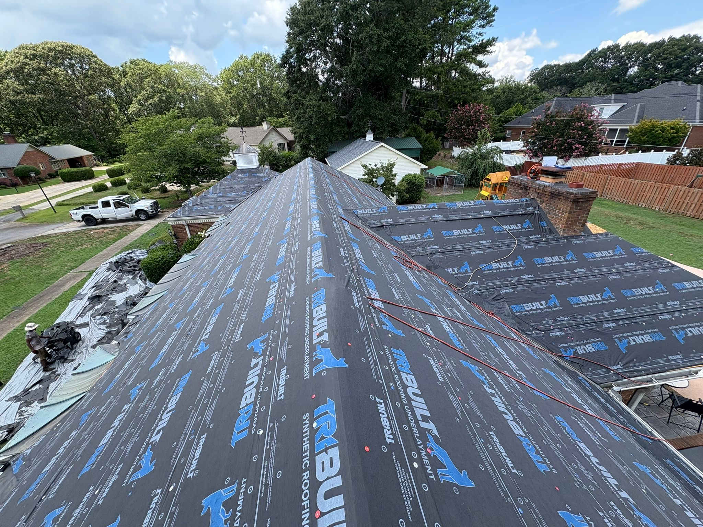
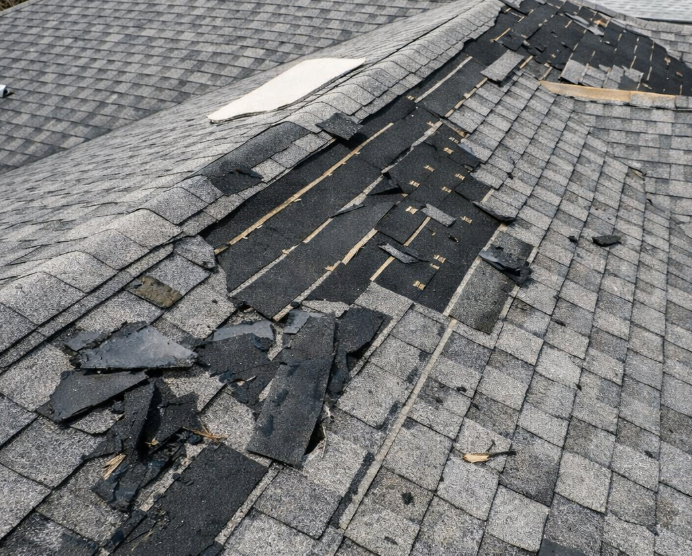

Roofing Services
Whether it's a leak, storm damage, or an aging roof that needs replacing, we deliver high-quality solutions from start to finish.

Roof Inspections & Estimates
Comprehensive roof inspections to assess condition, identify issues, and provide clear recommendations. Ideal for homeowners, buyers, and sellers.
Tap to learn more
Roof Repairs
Targeted repairs for leaks, storm damage, missing shingles, flashing issues, and general wear—completed efficiently to extend the life of your roof.
Tap to learn more

Roof Replacement
Complete roof replacement using quality materials and proven installation methods, tailored to your home and local conditions.
Tap to learn more

Storm & Insurance-Related Damage
Assistance with damage caused by wind, hail, or severe weather, including documentation support when working with insurance providers.
Tap to learn more
Roof Inspections & Estimates
Whether you're buying a home, filing an insurance claim, or just want peace of mind, our inspections give you a complete picture of your roof's condition. We check for damaged or missing shingles, flashing issues, ventilation problems, and signs of leaks — then provide a clear written estimate with no surprises.
Get Your Free Inspection →Roof Repairs
From a single missing shingle to widespread storm damage, our crew handles repairs of all sizes quickly and correctly. We use materials that match your existing roof and back all repair work with our workmanship warranty.
Get Your Free Inspection →Roof Replacement
When repairs aren't enough, we handle full replacements from tear-off to final inspection. We work with industry-trusted shingle brands and ensure every installation meets local building codes. You'll get a clean job site at the end of every day and a roof built to last.
Get Your Free Inspection →Storm & Insurance-Related Damage
After a major storm, navigating insurance claims can be stressful. We document damage thoroughly, work alongside your adjuster, and make sure nothing gets missed. Our goal is to get your roof restored quickly and correctly, with as little hassle as possible on your end.
Get Your Free Inspection →Window Services
From drafty old windows to full custom installations, we improve your home's comfort, appearance, and energy efficiency with precise fitting and professional installation.
Full Window Replacement
Removal and replacement of outdated or damaged windows with modern, energy-efficient options.
Tap to learn more
Energy Efficiency Upgrades
Window solutions that help reduce drafts, improve insulation, and lower energy costs.
Tap to learn more
Custom Fit & Installation
Precision installation to ensure proper fit, weather sealing, and long-term performance.
Tap to learn more
Full Window Replacement
Whether your windows are drafty, damaged, or simply outdated, we handle the full replacement process from removal to installation. We work with a range of styles and materials to match your home's look, and every installation is sealed and finished to last. New windows can immediately improve comfort, curb appeal, and energy efficiency.
Get Your Free Inspection →Energy Efficiency Upgrades (check this)
Older windows are one of the biggest sources of heat loss in a home. We install double and triple-pane options with low-E coatings and insulated frames that reduce drafts, keep temperatures stable, and lower your monthly energy bills. A worthwhile upgrade that pays for itself over time.
Get Your Free Inspection →Custom Fit & Installation
Not all windows are standard size — older homes especially tend to have openings that require custom-cut frames. We measure precisely, source the right fit, and install with tight weather sealing to prevent air and moisture intrusion. Every install is done right the first time so you don't have to worry about gaps, leaks, or callbacks.
Get Your Free Inspection →